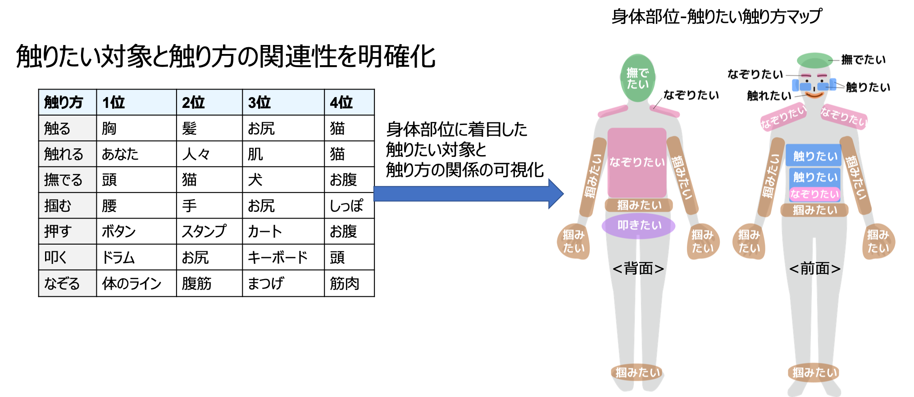
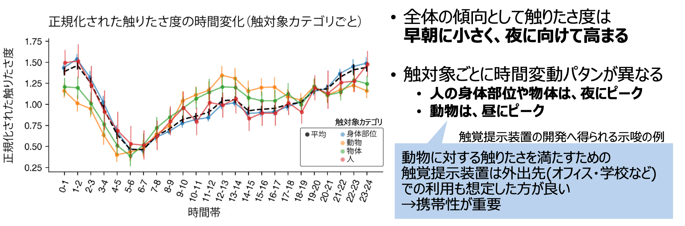
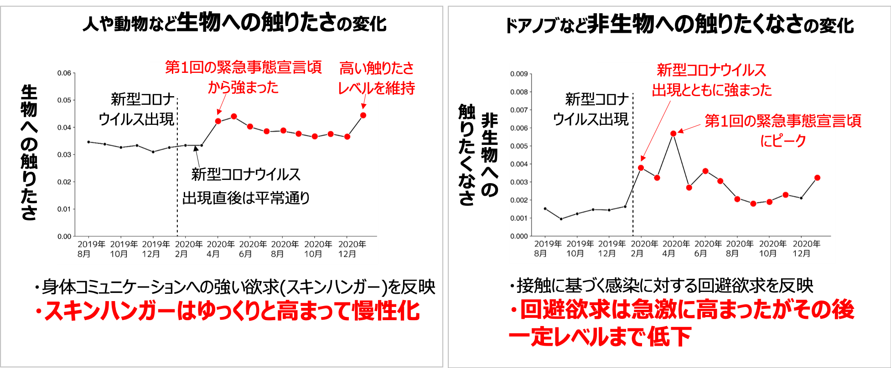
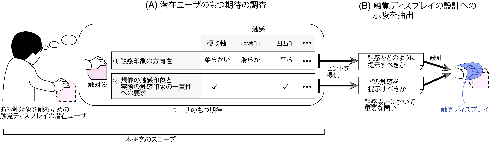

* This is the result of joint research with Dr. Yokosaka (NTT), Prof. Ban (Univ. of Tokyo), and Prof. Ho (Kyushu Univ.), but the views expressed here include my personal opinions.
Research and development of "haptic display technology", which delivers physical stimuli such as vibrations, forces, and heat through the human skin, is currently underway. For example, today's technology can already present sensations such as tracing a rough surface that does not actually exist or pressing a stiff button. As technology advances, it may become possible to present even richer sensations, such as the warmth of touching a pet. What kinds of applications could there be for this haptic display technology? In the classification by Ramírez et al. [1], three main applications are listed: "assistance, training, and entertainment." Among these, "assistance" (e.g., haptic navigation) and "training" (e.g., haptic-based training for medical practitioners) have clear practical value and are being actively explored. What about "entertainment"? For example, in games, vibrations are used to express contact with obstacles to enhance realism. However, the role of haptics here is auxiliary—serving another purpose (improving realism in the case of games). The game does not break down even without haptic feedback. Are there no entertainment applications where haptic presentation itself is the goal?
Changing the topic slightly: people enjoy audiovisual content such as movies and music in their leisure time. They watch a wonderful movie because they "want to see it" and listen to elegant classical music because they "want to listen to it." In other words, behind these activities lies some kind of desire (whether explicit or implicit) for sensory experience. Similarly, we sense desires for haptic experiences in our daily lives. We sometimes feel like touching a soft-looking cushion at a furniture store, or stroking the cheek of our young child. There are such moments scattered throughout daily life. By using haptic display technology to satisfy this desire for haptic experience—that is, the human "touch desire"—we believe it has the potential to enrich people's lives much like movies and music do. When I investigated prior research on touch desire, there was no study on the kind of "spontaneous touch desire experienced in everyday life" that I was interested in. Past research, for example, used objects rarely touched in daily life such as 3D-printed objects as stimuli, and had subjects touch them in a laboratory. There is also famous research on touch desire toward products in the context of purchasing behavior. However, all of these examined touch desire only in specific environments (laboratories) or specific contexts.
Considering how to collect touch desire that arises in daily life, I came up with the idea of leveraging social media. By analyzing texts containing touch desire, such as "I want to touch X" or "I want to grab X" that people post, we thought we could understand people's everyday touch desire. Below are excerpts of the analyses we performed.
First, we investigated what people want to touch and in what manner in everyday life. Two findings surprised us. One is that the targets people want to touch differ greatly depending on the manner of touch. It is known that people tend to use different ways of touching when extracting information such as temperature, shape, or texture, and this may be related. The other is that touch desire is concentrated on a limited number of targets (please see the paper). Despite the countless objects that one can touch in the world, it was unexpected that people's touch desire concentrates on only a handful of targets. For details, please refer to paper [2].

Figure 1: Touch targets and ways of touching. Based on this information, we mapped preferred ways of touching by body part.
Next, we became interested in whether touch desire is static or varies temporally. Until then, touch desire research had implicitly assumed that "touch desire is time-invariant," and the time of day at which laboratory experiments were conducted was not particularly controlled. However, since research on desires for other senses (such as vision and hearing) had shown that those desires vary temporally, we thought that haptic desire might also exhibit temporal variation. So we set out to examine the diurnal variation of touch desire. As a result, we found that there is significant variation throughout the day. Touch desire is lowest in the early morning, increases toward evening, and peaks at midnight (three times the early morning level). Furthermore, we found that the diurnal variation pattern depends on the touch target. For other people and objects, touch desire peaks at night, while for animals, it peaks during the daytime. For details, please refer to paper [3].

Figure 2: Diurnal variation of touch desire.
Study 2 was about cyclical temporal variation, but we were also curious about event-driven variation. Since January 2020, as COVID-19 spread, opportunities for contact between people and with objects decreased due to social distancing and restrictions on outings. As a result, how did people's awareness toward touching things change? In this study, we examined how touch desire varied along with the emergence of COVID-19. Figure 3 shows the results. As for touch desire toward living things, it remained at usual levels immediately after COVID-19 emerged, but increased around the first state of emergency, and stayed at high levels thereafter. This suggests that strong desire for physical communication (the so-called "skin hunger" phenomenon) may have become chronic. The change in touch desire is thought to have been caused by social distancing and restrictions on outings during the pandemic. On the other hand, we similarly analyzed the desire to NOT touch (touch avoidance) toward inanimate objects such as doorknobs. The desire to avoid touching inanimate objects such as doorknobs sharply increased with the emergence of COVID-19. For details, please refer to paper [4].

Figure 3: Variation in touch desire toward living things and touch avoidance toward inanimate objects.
Study 1 revealed that people have strong touch desire toward specific targets. If we can build a system that conveys to people the tactile sensations they would feel when touching these specific targets, it may be possible to satisfy their touch desire. However, there is a problem. While the tactile sensations that humans can perceive span many dimensions (softness, weight, roughness, etc.), current haptic display devices can express tactile sensations in at most about three dimensions [5]. In other words, current haptic display devices have difficulty comprehensively representing the tactile sensations of a target. We therefore considered an approach: rather than comprehensively representing tactile sensations, expressing only the tactile sensations that people expect from a target. While people can receive various tactile sensations in reality, they may have only specific tactile imagery for each target. Since this question was difficult to answer through social media text analysis, we conducted a large-scale online experiment. As a result, we revealed the tactile sensations and the direction of imagery that people expect from a target they want to touch. For example, people who want to touch slime expect (at least) softness, smoothness, flatness, and coldness. We also found that softness and smoothness are tactile sensations that people commonly expect across desired touch targets. For details, please refer to paper [6].

Figure 4: We pursued this research assuming a flow of investigating potential haptic-display users' expectations and extracting implications for haptic display design. Note that the scope of this research is limited to the expectation survey.